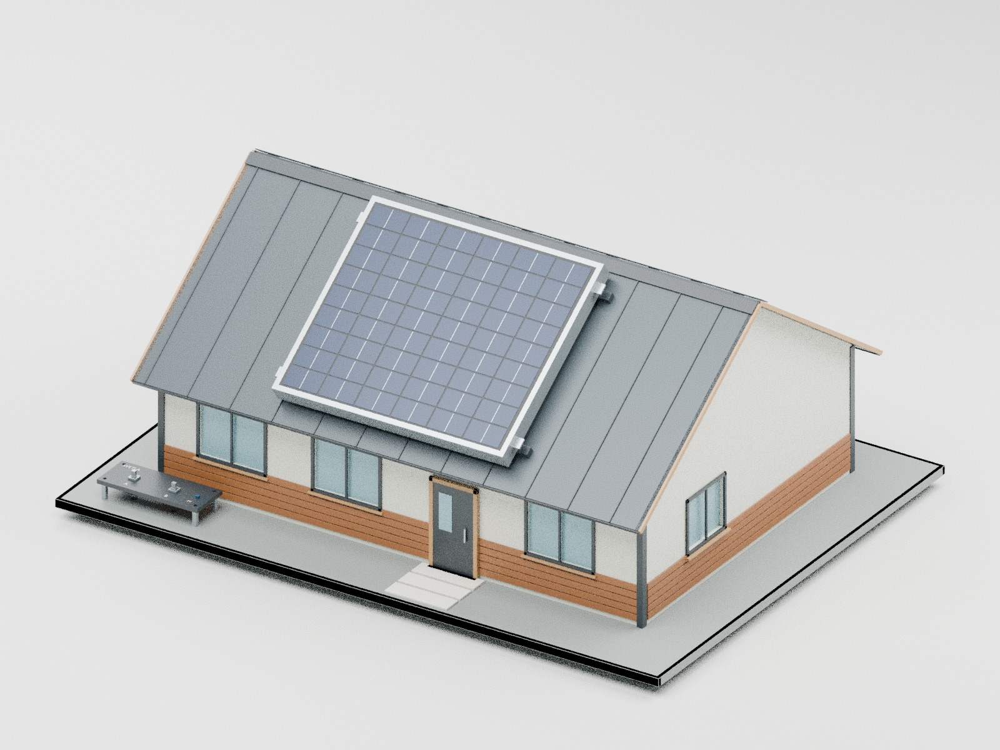
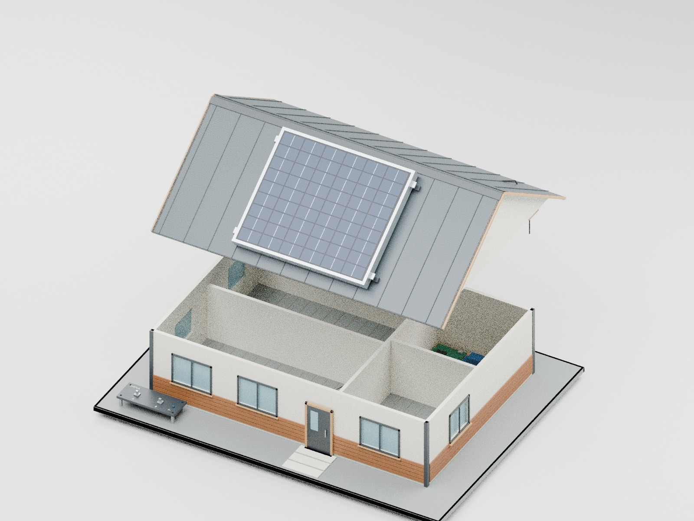

Celé steny, odnímateľná strecha v jednom kuse, bez nábytku. Rozmery v milimetroch.
SVG šablóny sú v priečinku vykresy/, každý diel má vlastný súbor Pxx-1ku1.svg alebo C01-1ku1.svg. Tlač na 100 %, over kontrolnú mierku 100 mm (C01: 50 mm). PDF je prehľad, nie šablóna 1:1.


Aktívny 3D prehliadač je v aplikácii na karte 3D model a stavba.